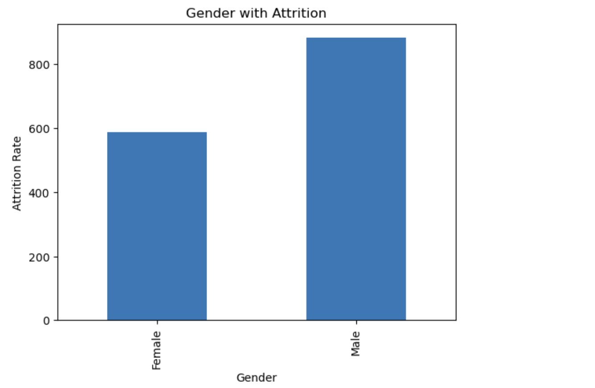
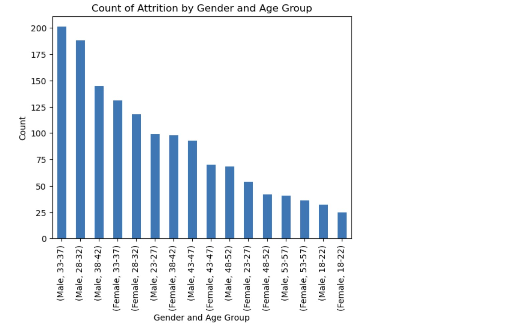
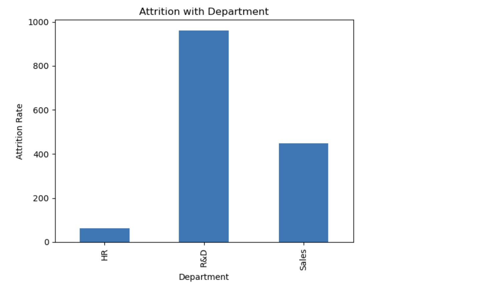
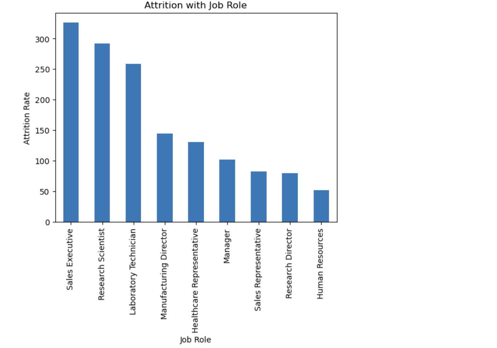
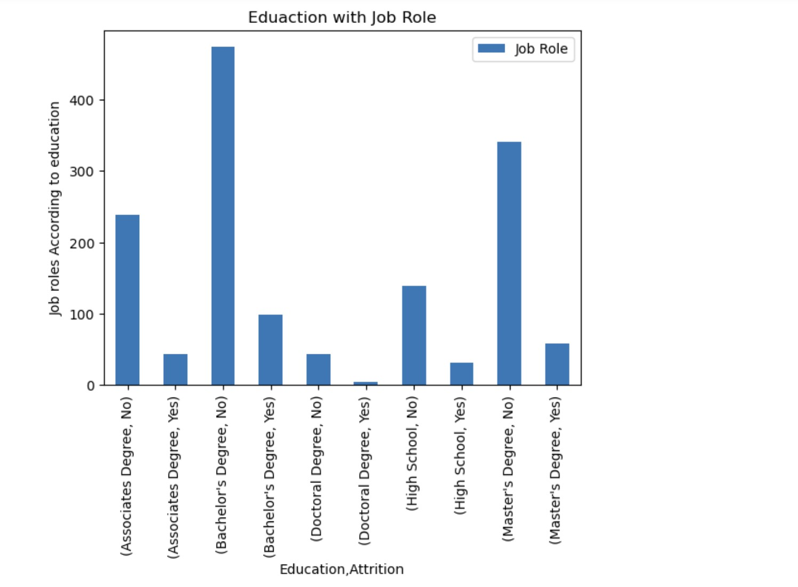
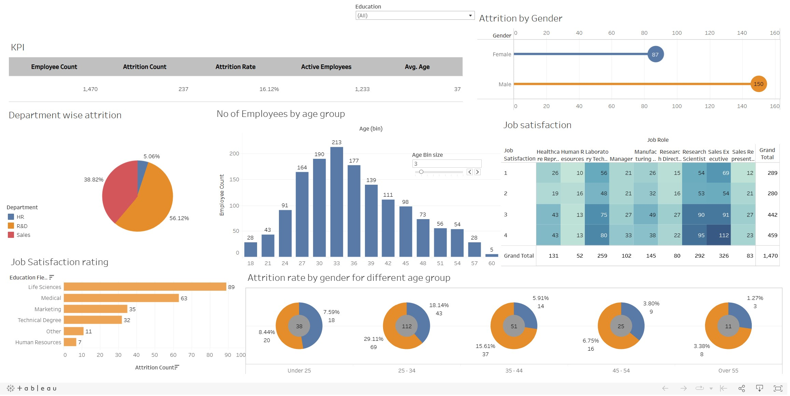

Analysis by answering few questions.
1. What is the Attrition based on Gender?
2. What is the Attrition based on Age Group?
3. What is the Attrition based on Deartment?
4. What is the Attrition based on Job Role?
5. What is the Attrition base on Education and Job role?
The Tableau Workbook of the HR Data Analysis.
